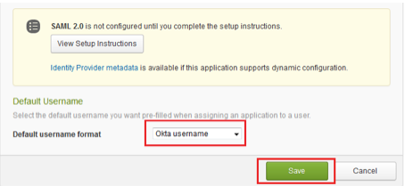

Email LearnUpon support to enable SAML for your account..
Copy the following text into the email and label it IDP Metadata:
Sign into the Okta Admin dashboard to generate this value.
Copy and paste the following text into the message and label it Certificate Fingerprint.
Sign into the Okta Admin dashboard to generate this value.Copy and paste the following text into the message and label it Login URL/Sign on URL.
Sign into the Okta Admin dashboard to generate this value.After receiving confirmation from LearnUpon that SAML is enabled, in the Okta Dashboard for the LearnUpon application, select Okta username for the Default username format, as shown below.
